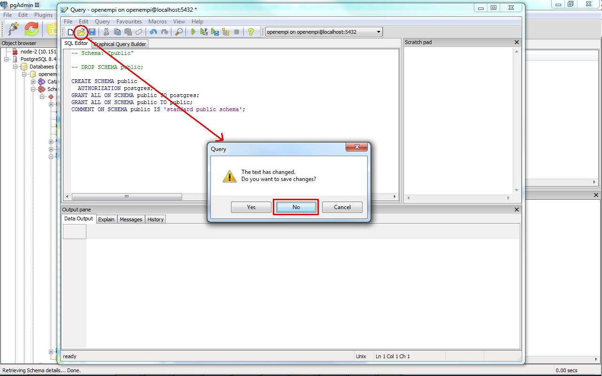

Deleting an existing database schema with pgAdmin III
- Login to openempi database if you haven't done so.
- Please delete extra tables which are created by your
experiments and not part of the standard openempi schema
- Open up Databases/openempi/Schemas/public node.
Click on Execute arbitrary SQL queries button on the toolbar.
- In the upcoming window's toolbar click on the Open button,
say 'No' for the question about saving.

- Browse to the drop database schema script:
- Click on the Execute query button on the toolbar:
- The query should be successful (otherwise take a second look at the first step):